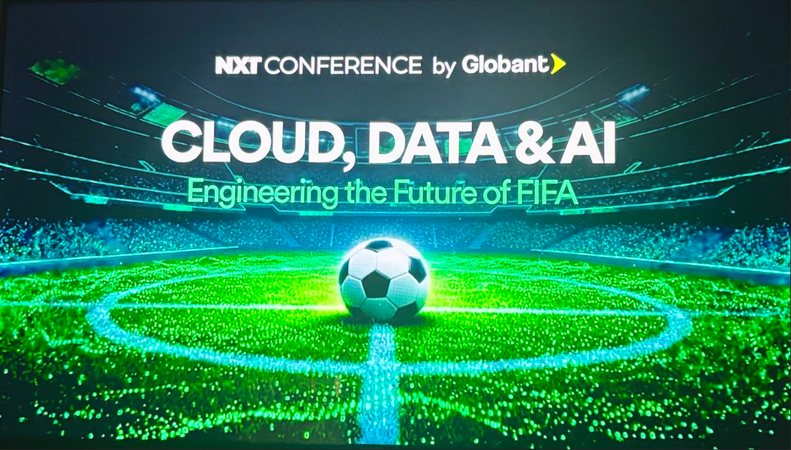

Teaching Assistant Data Science
Acompaño estudiantes en el aprendizaje de programación, análisis de datos y pensamiento técnico, ayudando a convertir conceptos complejos en explicaciones claras y aplicables.
Data · Business Analytics · Audience Insights · Digital Marketing
 Florencia Sosa Comisso
Florencia Sosa Comisso
Combino analítica, estrategia digital y marketing deportivo para entender comportamientos, desarrollar comunidades, detectar oportunidades y construir soluciones basadas en datos.

PERFIL
Me interesa comprender cómo se comportan las personas, cómo se construyen las comunidades y cómo la información puede convertirse en mejores decisiones de contenido, marketing y negocio.
Mi recorrido combina experiencia en Social Media, creación de contenidos, análisis de performance, marketing, audiencias y formación en análisis de datos.
Durante más de 20 años practiqué hockey y distintos deportes, experiencia que me permitió desarrollar una mirada sobre estrategia, dinámica competitiva, trabajo en equipo y toma de decisiones en contexto.
Hoy conecto esas experiencias para transformar datos, comportamientos y tendencias en insights claros y acciones concretas.
ACTUALMENTE
Acompaño estudiantes en el aprendizaje de programación, análisis de datos y pensamiento técnico, ayudando a convertir conceptos complejos en explicaciones claras y aplicables.
Estudio la Licenciatura en Marketing Deportivo, integrando estrategia, comportamiento de audiencias, ecosistemas deportivos, comunicación y toma de decisiones.
Desarrollo proyectos que conectan datos, performance, negocio, audiencias, comunicación y oportunidades de decisión.
DATA, AI & SPORTS INDUSTRY

Participar de NXT Conference me permitió ver cómo cloud, datos e inteligencia artificial están transformando la manera en que las organizaciones deportivas diseñan experiencias, optimizan procesos y toman decisiones.
La conferencia conectó directamente con mi recorrido: análisis de datos, automatización, productos digitales, experiencia de usuarios y oportunidades de negocio dentro del ecosistema deportivo.
Me interesa seguir profundizando en cómo la IA y los datos pueden potenciar fan engagement, performance reporting, business intelligence y soluciones aplicadas al deporte.
CASO DESTACADO DATA & BUSINESS
Proyecto analítico para identificar oportunidades de cross-selling a partir del comportamiento transaccional, combinando análisis exploratorio, machine learning y pensamiento de negocio.
¿Cómo detectar combinaciones de productos con potencial de aumentar ingresos y mejorar la estrategia comercial?
EDA, modelado y simulador interactivo para identificar oportunidades de venta cruzada accionables.
+19,4% de potencial estimado de uplift en ingresos a partir de recomendaciones de cross-selling.
💡 Estrategia de negocio + machine learning + análisis de comportamiento transaccional.
PROYECTOS EN DESARROLLO
Actualmente estoy desarrollando proyectos aplicados al análisis deportivo para conectar datos, rendimiento, visualización y toma de decisiones dentro del ecosistema sports business.
Proyecto en desarrollo orientado al análisis de rendimiento deportivo, visualización de KPIs, exploración de datos y construcción de insights accionables aplicados al deporte.
Exploración de datasets deportivos para analizar patrones de juego, rendimiento, eventos de partido y oportunidades de visualización aplicadas al análisis futbolístico.
ÁREAS DE INTERÉS
SPORTS & ANALYTICS PERSPECTIVE

Mi vínculo con el deporte empezó mucho antes de estudiar marketing deportivo o análisis de datos. Practiqué hockey durante más de 20 años y crecí siguiendo disciplinas como fútbol, tenis, Fórmula 1, vela, rally y otros deportes.
Hoy esa experiencia se transforma en una perspectiva analítica y comunicacional: me interesa entender cómo se construyen comunidades, audiencias, experiencias y decisiones dentro del ecosistema deportivo.
Vivo el deporte, estudio su industria y busco analizarlo desde datos, negocio, contenido y comportamiento.
CONTENIDO & MARKETING DIGITAL
Desarrollo contenidos y estrategias digitales combinando creatividad, análisis de audiencias, comunicación de marca, storytelling y seguimiento de resultados.
Edición de contenido audiovisual para un ecosistema deportivo orientado a experiencias, entrenamiento y construcción de comunidad.
Proyecto aplicado de Inbound Marketing orientado al diseño de un funnel de ventas, la captación de potenciales clientes y el acompañamiento del usuario durante su recorrido.
Participación en tareas de comunicación y contenido digital, aportando creatividad, organización y adaptación de mensajes a distintos formatos y objetivos.
OTROS PROYECTOS DATA

Pipeline con API, monitoreo de drift y observabilidad para modelos predictivos.

Dashboard comercial orientado a KPIs, segmentación, performance y toma de decisiones.
FORMACIÓN CONTINUA
Complemento mi experiencia práctica con formación, certificaciones y espacios de desarrollo que fortalecen mi perfil en datos, comunicación, marketing y liderazgo.
Henry
Formación intensiva en Python, SQL, Machine Learning, Power BI, análisis de datos y desarrollo de soluciones orientadas a negocio.
Henry
Desarrollo de herramientas para acompañar grupos, facilitar aprendizajes, comunicar con claridad y gestionar dinámicas de equipo.
Marketing Digital
Diseño de estrategias centradas en el recorrido del usuario, generación de demanda, contenidos y conversión.
EF SET
Nivel general B1, con comprensión lectora C1. Actualmente continúo fortaleciendo listening y comunicación oral para contextos profesionales.
Red Bull Wingfinder
Evaluación de fortalezas que destaca mi capacidad para adaptarme, conectar con personas, proponer ideas y construir acuerdos.
Learning Mindset
Integro formación, proyectos personales, conferencias y experiencia práctica para construir una mirada cada vez más completa sobre datos, audiencias, tecnología, marketing y deporte.
Aprender no es acumular conceptos: es convertirlos en decisiones, proyectos y nuevas formas de aportar.
MI FORMA DE TRABAJAR
HOY
Me interesan oportunidades donde se crucen analytics, negocio, audiencias, contenido, comunicación y deporte.
Busco aportar especialmente en roles vinculados a Audience Insights, Social Media & Community, Social Media Analytics, Content Strategy, Digital Marketing, Business Analytics, Fan Engagement, Performance Reporting y Business Intelligence.
¿Trabajamos juntos?
Estoy abierta a conectar con equipos y organizaciones donde pueda aportar desde la analítica, la comunicación, el marketing y el deporte.
EXPERIENCIA EN AUDIENCIAS & PERFORMANCE
Estrategia, contenido y crecimiento de comunidades
Experiencia en desarrollo de audiencias, contenido orgánico, activaciones digitales, monitoreo de tendencias y análisis de performance para optimizar decisiones de comunicación.
Fuerza Natural — Growth & Engagement
Estrategia de contenidos y activaciones digitales para fortalecer comunidad, engagement y posicionamiento de marca.
Audience & Consumer Journey Strategy
Proyecto aplicado sobre crecimiento orgánico, customer journey y optimización de contenidos basada en insights.
Marketing Deportivo & Entertainment
Experiencia e interés aplicado en audiencias deportivas, comportamiento de fans y tendencias en ecosistemas de deporte y entretenimiento.